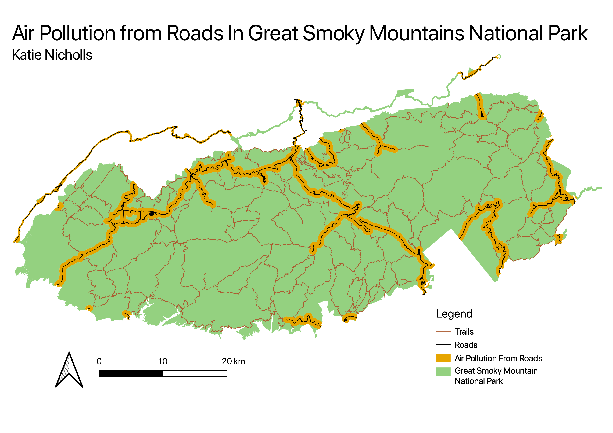

How Does Air Pollution From Roads Affect Great Smoky Mountain National Park?
Katie Nicholls
Using data from the National Park Service I created a 500 meter buffer around roads that go through the Great Smoky Mountains National Park (GSMNP) to show the area of effect of air pollution. Air pollution from the road can reach up to 500 meters from the road. I used the buffer to remove the portions of the park and trail system affected by air pollution with the intersection tool. I also used the clip tool to remove areas of the buffer that were no in the park boundaries so that the effect of the air pollution area on the park was clearer.

Data used for this project
NPS GIS for GSMNP
GSMNP Area
GSMNP Trail Map
GSMNP Road Map
Data Created
Clipped 500 Meter Buffer
Original 500 Meter Buffer
GSMNP Area With Road Pollution Removed
Trail Map With Road Rollution Removed